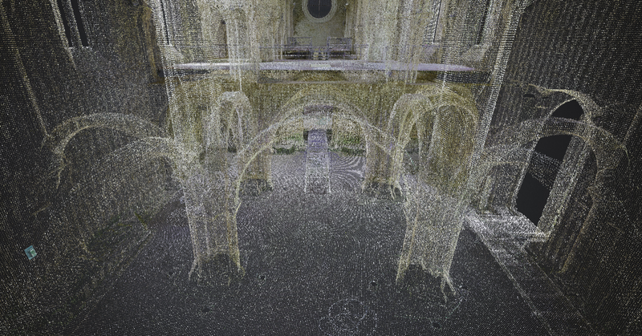
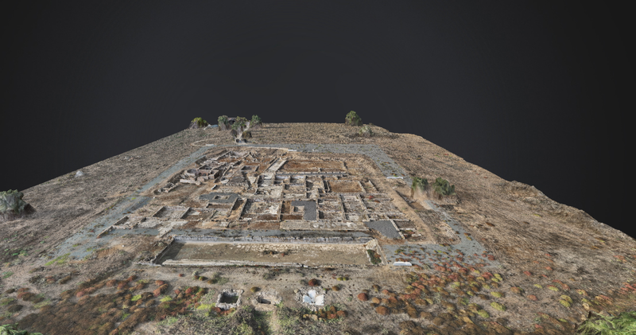
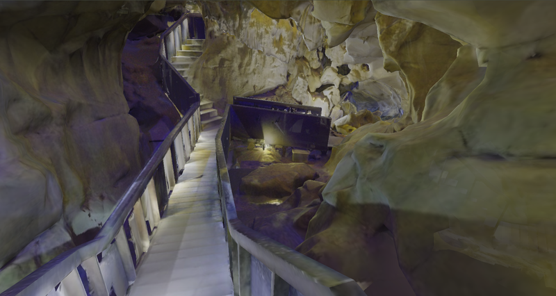

News ·
Escoural Cave gains a digital twin to support heritage conservation and public access
The University of Évora is helping create a digital representation of the cave through 3D surveying, environmental monitoring and a virtual visit.
GEOLOGICAL DATA SCIENCE
We connect geosciences, spatial data and remote sensing to understand landscapes, natural resources and heritage.

GEO-DS / POINT CLOUD01 / THE LABORATORY
GEO-DS (Geological Data Science) is a laboratory at the School of Sciences and Technology, University of Évora. It brings together research, education and specialist services, with links to the Institute of Earth Sciences.
From the Alentejo to other regions, we combine field observations, digital surveys and data analysis to study geological and environmental systems.
Combining geological, geochemical and geospatial data to investigate mineral resources, materials and environmental processes.
Supporting education, training and science communication by connecting surveying and analytical technologies with their applications.
Specialist services and collaboration with public and private organisations, from digital documentation to data interpretation.
02 / RESEARCH AND APPLICATIONS
Different places, questions and scales. The same attention to data quality and interpretation.
 01
01
Geology, geochemistry, mapping and geoenvironmental modelling for the study of resources and mining areas.
Former Rosalgar MineExplore an example 02
02
Three-dimensional documentation of buildings, archaeological sites and spaces with restricted access.
Jerónimos MonasteryExplore an example 03
03
Urban surveys, digital terrain models and the integration of information in geographic information systems.
Alcácer do SalExplore an example 04
04
Multispectral imagery and digital mapping to investigate vegetation, landscapes and coastal environments.
Tróia GrasslandExplore an example03 / TECHNOLOGIES
We combine surveying and processing methods, selecting the technology to suit each site and research question.

Roman Villa of PisõesDrone-based three-dimensional surveying, producing point clouds and digital surface and terrain models.
Point cloud / DTM / DSM / 3D modelView models using this technology
Escoural CaveSurveying interiors, architecture and caves through the registration and integration of multiple scanning positions.
Registration / Point cloud / 3D modelView models using this technologyTróia Grassland
Combining spectral bands and indices to investigate patterns in vegetation and landscapes.
Reflectance / Bands / IndicesView models using this technologyReflectance and spectral signature analysis for the study of materials, geological samples and heritage.
Spectral cube / Spectra / Data analysisView models using this technologyThe first hyperspectral models for the atlas are in preparation.
04 / WORK AND PROJECTS
Projects involving members of GEO-DS
View projects at the University of ÉvoraHyperspectral imaging and the characterisation of geological resources.
Technologies for the sustainable remediation of abandoned mines.
Climate change and cultural heritage through Brazil–Portugal collaboration.
Geoenvironmental models applied to abandoned mining areas.
05 / PUBLICATIONS
Research, results and news from GEO-DS.
News ·
The University of Évora is helping create a digital representation of the cave through 3D surveying, environmental monitoring and a virtual visit.
Scientific article ·
Minerals, 16(7), 709 (2026)
Scientific article ·
Sustainability, 18(12), 6038 (2026)
06 / PEOPLE
LET’S COLLABORATE
Research, training or a specialist survey? Contact GEO-DS to discuss the work.
Contact the laboratorygeods@uevora.pt